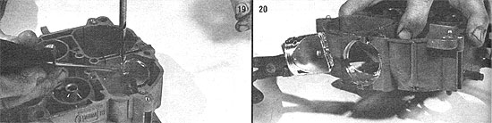

[19]Remove the hole saw, then ? using a No. 12 bit ? intersect the main cut, making sure to drill only deep enough to . . . [20] separate the newly formed plug from the rest of the body so it can be pulled free. With that done, dress the opening with a file to smooth any rough edges.